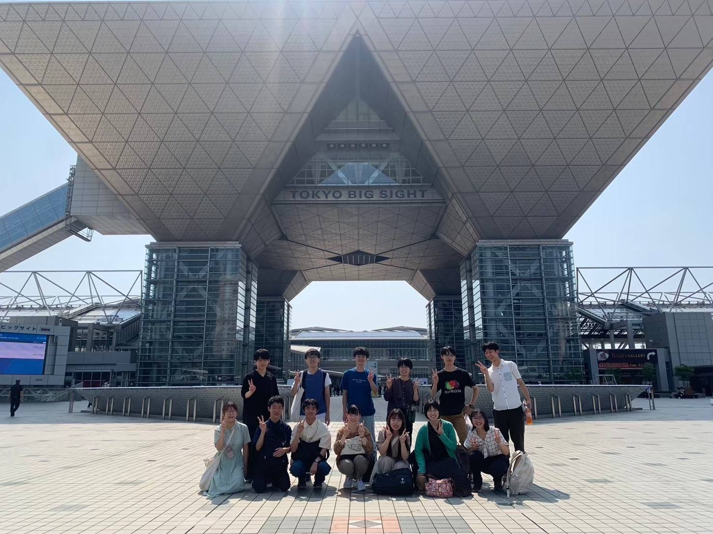

🌸 旅のしおり
2025 年 6 月 20 日 (金) 〜 6 月 22 日 (日)
6/20 (Fri) — 出発 Day
🚗 出発スケジュール
| 時間 | 内容 | 配車 |
|---|---|---|
| 21:00 | YM 出発 | ★山﨑車 — 花絵・遥輝 伊佐車 — 葵・★美咲・史菜 |
★ リーダー ☆ 副リーダー
- 夜行バスは1時間前までに集合場所に到着する
- 到着確認をリーダーと副リーダーで分担して行う
6/21 (Sat) — 横浜 & 東京
🗓️ スケジュール
| 時間 | 内容 | 備考 |
|---|---|---|
| 9:30 | 横浜中華街集合 | - |
| 10:00~ | 謎解き＆散策 | グループ自由行動 |
| 11:30~12:00 | 解散 → 観光 / 準備 | - |
| 12:00~ | グループごとに観光 | - |
| 19:00 | 夕食集合 | 月島もんじゃ 三九上野総本店 （花絵、遥輝、美咲、史菜） |
| 20:30 | ホテルプレール集合 | チェックイン |
| 22:30 | 就寝 | - |
| 22:00 | 夜行バス 🚌 金沢駅 発 | ★優華・真莉・結香・美実・☆野村・竹川・汐音 |
| 6:24 (22 日) | バスタ新宿 着 | 上記メンバー |
★ リーダー ☆ 副リーダー
- 夜行バスは1時間前までに集合場所に到着する
- 到着確認をリーダーと副リーダーで分担して行う
📍 住所リスト
- 横浜中華街（神奈川県横浜市中区山下町78-8 横浜イーストゲートビル 6F）
- 月島もんじゃ 三九上野総本店（東京都台東区上野4-7-2 アメ横 日拓ビル 1F〜3F）
- ホテルプレール（東京都台東区松が谷3-10-8）
6/22 (Sun) — Comic Event @ 東京ビッグサイト
🗓️ スケジュール
| 時間 | 内容 | 備考 |
|---|---|---|
| 8:00 | ホテルプレール出発 | - |
| 9:30 | 東京ビッグサイト集合 | - |
| 10:00 | 会場入場 & 席確保 | 昼食は事前購入分 |
| 16:30頃 | 会場発 | - |
| 16:30~ | グループごとに観光 & 夕食 | - |
| 22:00 | バスタ新宿 発 🚌 | ★美咲・史菜 |
| 23:35 | 同 発 🚌 | ★優華・美実・☆竹川・真莉・結香 |
★ リーダー ☆ 副リーダー
- 事前に当日（22日）の昼食を買っておく
- 夜行バスは1時間前までに集合場所に到着する
- 到着確認をリーダーと副リーダーで分担して行う
🗺️ マップ & 写真

👥 班員リスト
| メンバー |
|---|
| 優華・みみ |
| 野村・結香・ひろみ |
| 花絵・遥輝・本田晴樹 |
| 竹川・真莉・汐音 |
| 葵・史菜・美咲・原口遥 |
| 山﨑・壮吾・りんた |
| 畑山・品田優作 (弟) |
| 伊佐帆南（お手伝い） |